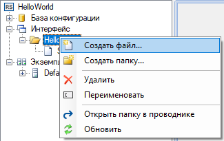
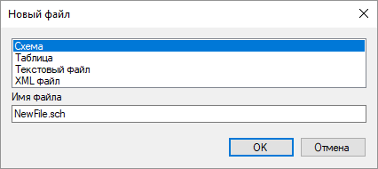
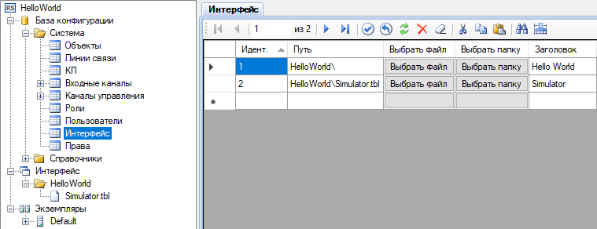

Представление – это форма отображения информации в приложении Вебстанция. По умолчанию поддерживается 2 типа представлений: табличные представления и схемы. С помощью подключения дополнительных плагинов может быть добавлена поддержка других типов представлений.
Для создания представлений предназначены специальные редакторы: Редактор таблиц и Редактор схем. Созданые представления сохраняются в файлы, которые должны располагаться в директории интерфейса внутри проекта. В процессе выполнения файлы представлений располагаются в директории интерфейса, указанной в настройках приложения Сервер, или в её поддиректориях, по умолчанию C:\SCADA\Interface\
Примеры файлов представлений:
Interface\Servers\ServerRoom.sch - схема,
Interface\Servers\ServerRoom.tbl - табличное представление.
Чтобы открыть диалог для создания представления, выберите пункт контекстного меню Создать файл (рис. 1 и 2). Затем в открывшемся окне выберите тип представления, укажите имя файла и нажмите кнопку OK. Созданный файл отобразится в проводнике проекта. По двойному щечку на соответствующем узле проводника проекта, представление открывается в редакторе.

Рис. 1. Меню для создания представления

Рис. 2. Диалог для создания представления
После того, как файлы представления созданы, их необходимо прописать в базе конфигурации в таблице Интерфейс, как показано на рис. 3. Идентификатор представления должен быть уникальным. Путь к представлению указывается относительно директории интерфейса. Текст, указанный в столбце Заголовок отображается в дереве представлений Вебстанции, а идентификаторы определяют сортировку представлений. Если файлы представлений расположены в поддиректориях директории интерфейса, то эти поддиректории также должны быть прописаны в таблице Интерфейс.

Рис. 3. Редактирование таблицы Интерфейс